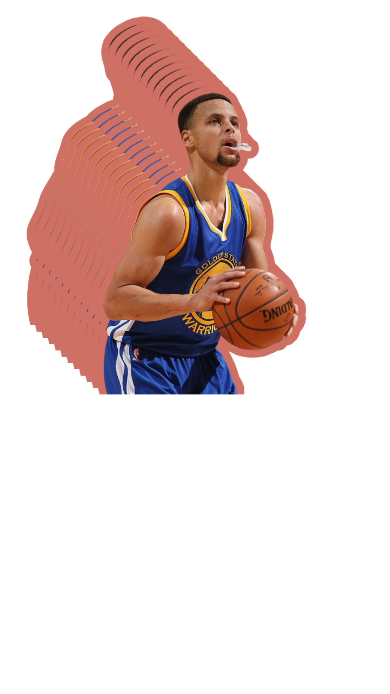
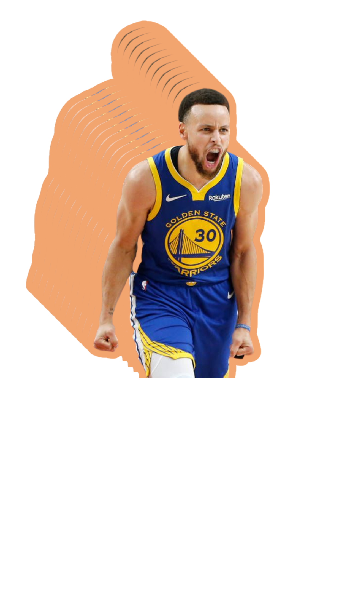
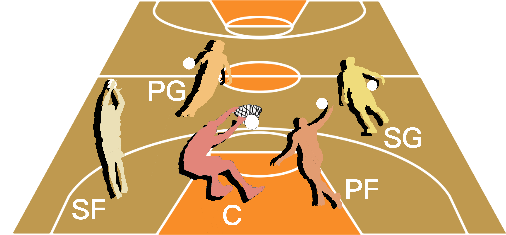

Is raining threes worth it?
An exploration of 3-points ball at NBA.
In the last years the NBA has changed dramatically.
The playstyle is now more oriented toward early three point shot and fast offensive transitions.
Many analyst have been wondering if this basketball revolution benefits to the show and helps the team to win the matches.
Scroll to continue
To examine this further, let's explore the famous NBA basketball idol Stephen Curry first.
Stephen Curry
Click on the portraits to see the 3-points ball shots data of every idol.
* Note: Wage difference was calculated by dividing female faculty wage by male faculty wage. These figures are based on 2015 data.


Let's take a closer look by concentration.
In this sunburst diagram, the inner circle represents the 4 major divisions of Harvard's faculty of Arts & Sciences. The outer circle represents concentrations within these divisions.
Hover over the individual segments to explore the number of female faculty as well as gender trends across faculty positions for each concentration and division.
And let's also take a look at differences in wages.
Wage Gap Between Male and Female Professors at Harvard
Let's take a look at 3-points ball in the NBA Finals.
Players are always exposed to intense and fierce physical play in th NBA Finals. 3-points ball can help you go big or go home.
Click on the table to see the change players shoot 3-points ball between 1980-2018.
Do the players who prefer to make three-pointers earn more?
rocket_launch
We collect the 3-pointers data, salary, and their Twitter account views and praise of their players. Perhaps there is a relationship between these factors...?
Click on the dots to see relation between 3-pointers shooters and their social impact in the season 2016-2017.
However, these problems are nothing new.
There has always been a gender imbalance among faculty at these institutions. Only centuries after their founding did women become a part of their leadership.
History of Female Leadership in Academia

Can three-pointers set off the same boom in different ages? Let's show it!
Now tell us how YOU feel!
About this Project
Our Team
Ryan Fang
Ryan is a junior in ZJU concentrating in Crypto and computer technology.
Vann Tang
Rachel is a sophomore in Lowell concentrating in Computer Science.
Carton Liu
Carton is a junior in ZJU majored in Artifical Intelligence and Computer Science.
Notes
1. We would like to take special note to address that the gender-binary nature of this project is based merely on the data/information we were able to find in the time we had provided to work on this project. The lack of data concerning nonbinary gender identities is a serious issue that reflects the gravity of the problem. Due to the lack of data on this and due to our focus on women, however, this was not given the attention needed.
2. Our visualizations are based on publicly available data and information; any and all potential errors reflect those of these online resources.
References
- Data on shots taken during the 2014-2015 season.
- NBA 3 Point Percentages Through the Years : 1950-2017 season.
- Data about NBA on the court performance with Social Influence, Popularity and Power Social Power NBA
- NBA 16/17 Season Analysis : Data on 2016-2017 season
- It's raining threes in NBA: is it worth it?
- Three pointers win championships: EDA and predicti.
- NBA Finals Three Point Stats, 1980-2017.
- Datasets for the 2013 through 2021 seasons College Basketball Dataset.
- W.O.W. Where are Our Women?